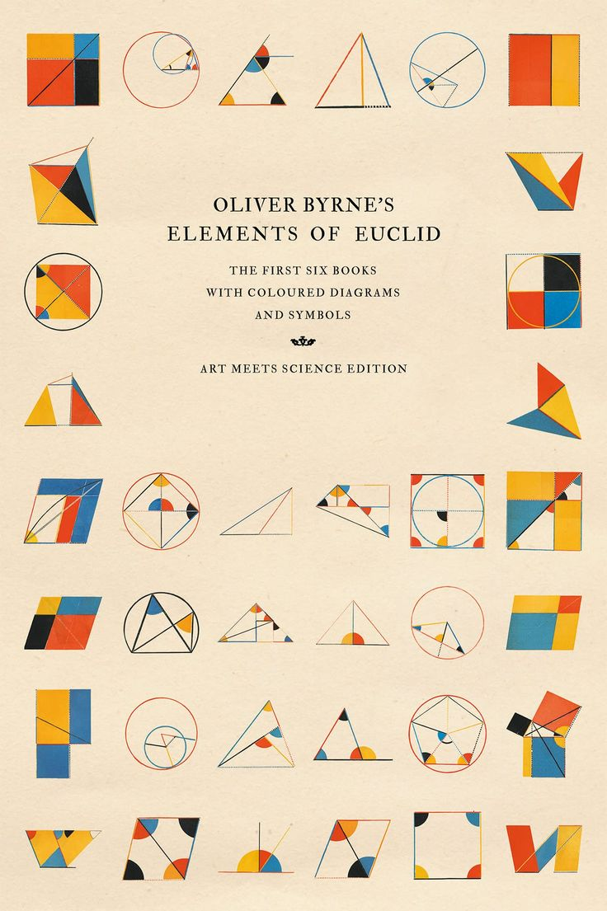

Aunque los egipcios y los babilonios ya utilizaban conocimientos geométricos hace más de 4000 años, la geometría comenzó a desarrollarse como una ciencia en la antigua Grecia. Filósofos y matemáticos como Tales de Mileto, Pitágoras y, sobre todo, Euclides, dieron forma a la geometría tal y como la conocemos hoy. Euclides, que vivió en Alejandría alrededor del siglo III a. C., escribió un libro llamado Los Elementos, donde reunió y organizó los conocimientos geométricos de su tiempo. En él estableció definiciones, axiomas y teoremas, mostrando cómo, a partir de unas pocas ideas básicas, se podían deducir muchas otras. Por eso, Euclides es considerado el "padre de la geometría" y su obra fue estudiada durante más de dos mil años.
